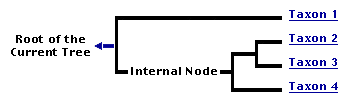
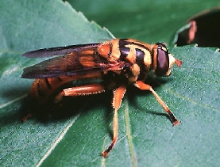
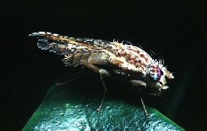

Diptera
True Flies
Brian M. Wiegmann and David K. Yeates

This tree diagram shows the relationships between several groups of organisms.
The root of the current tree connects the organisms featured in this tree to their containing group and the rest of the Tree of Life. The basal branching point in the tree represents the ancestor of the other groups in the tree. This ancestor diversified over time into several descendent subgroups, which are represented as internal nodes and terminal taxa to the right.
You can click on the root to travel down the Tree of Life all the way to the root of all Life, and you can click on the names of descendent subgroups to travel up the Tree of Life all the way to individual species.
For more information on ToL tree formatting, please see Interpreting the Tree or Classification. To learn more about phylogenetic trees, please visit our Phylogenetic Biology pages.
close boxIntroduction
The Diptera are commonly known as (true) flies and include many familiar insects such as mosquitoes, black flies, midges, fruit flies, blow flies and house flies. Flies are generally common and can be found all over the world except Antarctica. Many species are particularly important as vectors of disease in man, other animals, and plants. In addition, much of our knowledge of animal genetics and development has been acquired using the vinegar fly Drosophila melanogaster (family Drosophilidae) as an experimental subject (Lawrence, 1992).
The earliest fossil flies are known from the Upper Triassic of the Mesozoic geological period, some 225 million years ago (Evenhuis, 1995). Since that time they have diversified to become one of the largest groups of organisms. There have been about 150,000 species of flies formally described by scientists; thus about 1 in every 10 animals described is a fly. A greater number of species await description and most of these will be found in environments that remain to be studied intensively, such as tropical forests.
Flies are holometabolous insects, that is their life cycle involes a major change in form from a soft-bodied, wingless larval stage to a hardened, winged adult.
Larval flies have a variety of common names, such as wrigglers and maggots. Fly larvae have an enormous variety of feeding habits, and individual species often have very precise requirements. Many consume decaying organic matter, or are predacious, and a large proportion are parasitic on other insects and other organisms. Adult flies are almost always free-living and fly during the day. They typically consume liquid food such as nectar and other plant exudates, or often decomposing organic matter.
Figure 1. Life Stages of the stable fly, Stomoxys calcitrans; clockwise from left: eggs, larva, puparium, adult. © 2004 Department of Entomology, University of Nebraska-Lincoln
Characteristics
The major morphological feature which distinguishes flies from other insects is their reduced hind wings, termed halteres. The halteres are small, club-like structures that function as balancing organs during flight. Thus adult flies have only one pair of functional wings, hence their scientific name-- Diptera (di - two, pteron - wing). A few other groups of insects have also convergently attained a similar two-winged form, such as male coccoids (Hemiptera-Sternorrhyncha). A few flies have lost their wings (and halteres) altogether.
Because of the reliance on the forewings for flight, the mesothorax has become enlarged to contain the enormous flight muscles, and the pro- and metathorax are correspondingly reduced.
The mouthparts of flies are also characteristically suctorial and many have large fleshy pads with drainage canals termed pseudotracheae for efficient liquid uptake. Some flies have mouthparts modified for stabbing and piercing other insects, such as the predatory robber-flies (Asilidae) and dance flies (Empididae). Mosquitoes and some other ectoparasitic groups have mouthparts modified for piercing the skin of a vertebrate host and removing blood and other fluids.
Figure 2. A robber fly, family Asilidae, with prey. 1992 Dexter Sear
Larval Diptera are typically small, pale and soft-bodied. They lack true legs and move by peristaltic waves of muscular contraction through the body. The larvae of most species of flies have a reduced head capsule and all that remains are the mandibles and some associated sclerites which are collectively called the cephalopharyngeal skeleton.
Dipteran pupae have non-functional mandibles (adecticous), and may have the appendages free from the body (exarate), or glued to the body (obtect). If exarate, the pupa is concealed inside the hardened skin (puparium) of the last larval instar.
Major Groupings of Diptera
The Diptera are divided into two suborders, the Nematocera and Brachycera. The Nematocera include generally small, delicate insects with long antennae such as mosquitoes, crane-flies, midges and their relatives. The Brachycera includes more compact, robust flies with short antennae. In older classifications two Divisions were recognised in the Brachycera, the Orthorrhapha and Cyclorrhapha. The "Orthorrhapa" includes brachyceran flies with a simple, obtect pupa, such as horse flies and robber flies, and the Cyclorrhapha comprise brachyceran flies with a pupa enclosed in a hardened puparium. The Cyclorrhapha are further divided into two groups based on the presence or absence of the ptilinum and associated fissure on the head. The ptilinum is a sac which is everted during the emergence of the adult fly to assist in breaking free of the puparium. The Aschiza lack the ptilinum whereas it is present in the Schizophora.
Figure 3. Olbiogaster sackeni, family Anisopodidae, Nematocera.© 1996 C. R. Nelson
Figure 4. Milesia scutellata, a flower fly, family Syrphidae, Aschiza, Cyclorrhapha.© 1996 C. R. Nelson
Figure 5. Paracantha sp., a fruit fly, family Tephritidae, Schizophora, Cyclorrhapha.© 1996 C. R. Nelson
Discussion of Phylogenetic Relationships
The traditional groupings of Diptera have been critically reexamined within a cladistic framework in recent decades by a suite of workers, beginning with the great dipterist Willi Hennig. A consensus has emerged that many of the traditional categories such as the Nematocera, Orthorrhapha and Aschiza are not natural groups (they are paraphyletic). In other words these categories consist of a collection of basal lineages from which the other (monophyletic) catergories (Brachycera, Cyclorrhapha and Schizophora, resepectively) arose. Attempts to formulate a monophyletic classification of Diptera have gained pace recently but no overarching consensus has been reached to date (e.g. Michelsen 1996; Oosterbroek and Courtney 1995; Sinclair et al. 1994; Cumming et al. 1995; Griffiths 1994, 1996). The most comprehensive treatment of dipteran phylogeny and contemporary views on morphological character evidence can be found in Volume 3 of the Manual of Nearctic Diptera (McAlpine and Wood 1989).
The addition of data from broad-based comparative morphological studies of both adult and immature stages (for example, Courtney 1991; Sinclair 1992; Ovchinnikova 1989; Oosterbroek and Courtney 1995) and also from DNA sequences will be critical in the reformulation of dipteran classification (Friedrich and Tautz 1997; Wiegmann et al. 2003). The pages at this web site will document the areas of agreement, outstanding difficulties, and research being conducted to derive a new classification. These are exciting times for students of dipteran classification.
References
Bertone, M. A., G. W. Courtney, and B. M. Wiegmann. 2008. Phylogenetics and temporal diversification of the earliest true flies (Insecta: Diptera) based on multiple nuclear genes. Systematic Entomology 33(4):668-687.
Bickel, D. J. 1982. Diptera. In: S. P. Parker (ed.). Synopsis and Classification of Living Organisms, Vol. 2. McGraw-Hill, New York, pp. 563-599.
Courtney, G. W. 1991. Phylogenetic analysis of the Blephariceromorpha, with special reference to mountain midges (Diptera: Deuterophlebiidae). Syst. Entomol. 16:137-172.
Cumming, J. M., B. J. Sinclair, and D.M Wood. 1995. Homology and phylogenetic implications of male genitalia in Diptera-Eremoneura. Entomol. Scand. 26:120-151.
Ennos, A. R. 1989. Comparative functional morphology of the wings of Diptera. Zool. J. Linn. Soc. 96:27-48.
Ferrar, P. 1987. A guide to the breeding habits and immature stages of Diptera Cyclorrhapha. Entomonograph 8:1-907 Leiden.
Friedrich, M. and D. Tautz. 1997. Evolution and phylogeny of the Diptera: A molecular phylogenetic analysis using 28S rDNA sequences. Syst. Biol. 46:674-698.
Griffiths, G. C. D. 1972. The phylogenetic classification of Diptera Cyclorrhapha, with special reference to the male postabdomen. Series entomologica 8, 340pp. The Hague.
Griffiths, G. C. D. 1994. Relationships among the major subgroups of Brachycera (Diptera): A critical review. Can. Entomol. 126:861-880.
Griffiths, G. C. D. 1996. Review of papers on the male genitalia of Dipteraby D.M. Wood and associates. Studia Dipterol. 3:107-123.
Grimaldi, D and J. Cumming. 1999. Brachyceran Diptera in Cretaceous ambers and Mesozoic diversification of the Eremoneura. Bull. Am. Mus. Nat. Hist. 239:1-124.
Hennig, W. 1958. Die Familien der Diptera Schizophora und ihre phylogenetischen Verwandtschaftsbeziehungen. Beitr. Entomol. 8:505-688.
Hennig, W. 1973. Diptera. In: W. Kukenthal (ed.) Handbuch der Zoologie, IV: Arthropoda. de Gruyter, New York, pp. 1-337.
King, D. G. 1991. The origin of an organ: Phylogenetic analysis of evolutionary innovation in the digestive tract of flies (Insecta: Diptera). Evolution 45:568-588.
Krivosheina, N. P. 1991. Phylogeny of lower Brachycera (Diptera): A new view. Acta Entomol. Bohemoslov. 88:81-92.
Krzeminski, W. 1992. Triassic and Lower Jurassic stage of Diptera evolution. Mitteil. Schweizer. Entomol. Gesell. 65:39-59.
Lawrence, D. 1992. The Making of a Fly, Blackwell Scientific, Inc., Oxford.
McAlpine, J. F. 1989. Phylogeny and classification of the Muscomorpha. In: McAlpine J.F., Wood D.M. (eds.)Manual of Nearctic Diptera 3. Research Branch, Agriculture Canada, Monograph 32:1397-1518.
McAlpine, J. F., B. V. Peterson, G. E. Shewell, H. J. Teskey, J. R. Vockeroth, and D. M. Wood (eds.). 1981, 1987. Manual of Nearctic Diptera, Vol. 1 and 2. Research Branch, Agriculture Canada, Monographs 27 and 28.
McAlpine, J.F and D.M. Wood (eds.). Manual of Nearctic Diptera, Vol. 3. Research Branch, Agriculture Canada, Monograph 32.
Michelsen, V. 1996. Neodiptera: New insights into the adult morphology and higher level phylogeny of Diptera (Insecta). Zool. J. Linn. Soc. 117:71-102.
Nagatomi, A. 1991. History of some families of Diptera, chiefly those of the lower Brachycera (Insecta: Diptera). Bull. Biog. Soc. Japan 46:21-38.
Nagatomi, A. 1992. Notes on the phylogeny of various taxa of the orthorrhaphous Brachycera (Insecta: Diptera). Zool. Science 9:843-857.
Oosterbroek, P. and G. Courtney. 1995. Phylogeny of the nematocerous families of Diptera (Insecta). Zool. J. Linn. Soc. 115:267-311.
Oosterbroek, P. and B. Theowald. 1991. Phylogeny of the Tipuloidea based on characters of larvae and pupae (Diptera, Nematocera): With an index to the literature except Tipulidae. Tijdschr. Entomol. 134:211-267.
Ovchinnikova, O. G. 1989. Musculature of the male genitalia of Brachycera-Orthorrhapha (Diptera). Trudy Zool. Inst. Akad. Nauk SSSR 190:1-166.
Pape, T. 1992. Phylogeny of the Tachinidae family-group (Diptera: Calyptratae). Tijdschr. Entomol. 135:43-86.
Sinclair, B. J. 1992. A phylogenetic interpretation of the Brachycera (Diptera) based on the larval mandible and associated mouthpart structures. Syst. Entomol. 17:233-252.
Sinclair, B. J., Cumming, J. M. and D. M. Wood. 1994. Homology and phylogenetic implications of the male genitalia in Diptera-Lower Brachycera. Entomol. Scand. 24:407-432.
Wada, S. 1991. Morphological evidence for the direct sister group relationship between the Schizophora and the Syrphoidea (Aschiza) in the phylogenetic systematics of the Cyclorrhapha (Diptera: Brachycera). J. Nat. Hist. 25:1531-1570.
Wiegmann, B. M., C. Mitter, and F. C. Thompson. 1993. Evolutionary origin of the Cyclorrhapha (Diptera): tests of alternative morphological hypotheses. Cladistics 9:41-81.
Wiegmann, B. M., D. K. Yeates, J. L. Thorne, and H. Kishino. 2003. Time flies, a new molecular time-scale for brachyceran fly evolution without a clock. Syst. Biol. 52:745-756.
Wood, D. M. and A. Borkent 1989. Phylogeny and classification of the Nematocera. In: McAlpine J.F., Wood, D.M. (eds.) Manual of nearctic Diptera 3. Research Branch, Agriculture Canada, Monograph 32: 1333-1370.
Woodley, N. E. 1989. Phylogeny and classification of the "Orthorrhaphous" Brachycera. In: McAlpine J.F., Wood D.M. (eds.)Manual of Nearctic Diptera 3. Research Branch, Agriculture Canada, Monograph 32:1371-1395.
Yeates, D. K. 1994. The cladistics and classification of the Bombyliidae (Diptera: Asiloidea). Bull. Am. Mus. Nat. Hist. 219:1-191.
Yeates, D. K. 2002. Relationships of the lower Brachycera (Diptera): A quantitative synthesis of morphological characters. Zool. Scripta 31:105-121.
Yeates, D. K. and B. M. Wiegmann. 1999. Congruence and controversy: Toward a higher-level phylogeny of Diptera. Ann. Rev. Entomol. 44:397-428.
Yeates, D. K. and B. M. Wiegmann. 2005. Phylogeny and evolution of Diptera: recent insights and new perspectives, in Yeates, D. K. and B. M. Wiegmann, eds. The Evolutionary Biology of Flies. Columbia University Press.
Yeates, D. K., R. Meier, and B. M. Wiegmann. 2003. Phylogeny of true flies (Diptera): A 250 million year old success story in terrestrial diversification. Entomol. Abh. 61:119.
Zatwarnicki, T. 1996. A new reconstruction of the origin of the eremoneuran hypopygium and its implications for classification (Insecta: Diptera). Genus 7:103-175.
Information on the Internet
- FLY-TREE. Building the Dipteran Tree of Life: Cooperative Research in Phylogenetics and Bioinformatics of True Flies (Insecta: Diptera).
- The Diptera Site, Information about the World's Diptera
- Diptera.info. An interactive site for dipterists from all continents.
- The BioSystematic Database of World Diptera Nomenclature Database.
- Diptera homepage, Canadian National Collection of Insects, Arachnids, and Nematodes
- CSIRO Anatomical Atlas of Flies
- World Diptera Systematists HomePage
- Catalog of the DIPTERA of the Australasian and Oceanian Regions. N.L. Evenhuis
- Catalog of the Fossil Flies of the World. N.L. Evenhuis
- Drosophila Flybase
- Flybrain
- FlyView Home (Drosophila Image Database)
- Dipteran Families
Title Illustrations
| Scientific Name | Aedes albopictus |
|---|---|
| Location | New Jersey, United States |
| Comments | Asian tiger mosquito |
| Specimen Condition | Live Specimen |
| Life Cycle Stage | adult |
| Source | #1366026 |
| Source Collection | Bugwood Network/Forestry Images |
| Image Use | This media file is licensed under the Creative Commons Attribution License - Version 3.0. |
| Copyright | © Susan Ellis |
| Scientific Name | Tabanus sp. |
|---|---|
| Location | USA, CA, Nevada Co.: Sagehen Creek Field Station, Jeffrey Pine Forest, 39º26'N 120º14'W, 1900m |
| Source | Tabanus sp. - Horse Fly |
| Copyright | © Alex Wild |
| Scientific Name | Bithia sp. |
|---|---|
| Location | Fodhele, Crete, Greece |
| Specimen Condition | Live Specimen |
| Identified By | Theo Zeegers |
| Behavior | A tachinid fly sucking nectar from the flowers of a sea squill (Urginea maritima) |
| Source | Sucking nectar |
| Source Collection | Flickr |
| Image Use | This media file is licensed under the Creative Commons Attribution-NonCommercial-NoDerivs License - Version 2.0. |
| Copyright | © 2008 Stavros Markopoulos |
About This Page
The authors wish to thank C.R. Nelsen, N.L. Evenhuis and D. Maddison for comments and suggestions on this page. We also thank C.R. Nelson, M. Stringham, S.J. Scheffer, D. Sear, and J. Baker for providing photographic images.
Brian M. Wiegmann
North Carolina State University, Raleigh, North Carolina, USA
David K. Yeates
CSIRO Division of Entomology, Canberra, Australia
Correspondence regarding this page should be directed to Brian M. Wiegmann at
bwiegman@unity.ncsu.edu
Page copyright © 1996 Brian M. Wiegmann and David K. Yeates
All Rights Reserved.
- Content changed 29 November 2007
Citing this page:
Wiegmann, Brian M. and David K. Yeates. 2007. Diptera. True Flies. Version 29 November 2007 (under construction). http://tolweb.org/Diptera/8226/2007.11.29 in The Tree of Life Web Project, http://tolweb.org/